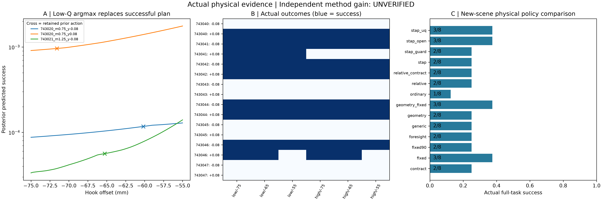

UNVERIFIED independent method gain · actual offline simulation · no physical robot motion
96 parameter interventions across8 native initial scenes; bounded frozen-model comparisons across2 further scenes ×2 masses ×2 declared targets. Native100-step success retained AND40mm declared goal. Initial probability-ranking runs are diagnostic only; primary results use separately executed log-ranking correction. No final-test or multisample-seed claim.

| Method | Full-task | Native only | Rescue / regression vs ordinary | Mean episode wall seconds |
|---|---|---|---|---|
| contract | 2/8 | 4/8 | 1 / 0 | 3.63 |
| fixed | 3/8 | 4/8 | 2 / 0 | 3.45 |
| fixed90 | 2/8 | 3/8 | 1 / 0 | 3.44 |
| foresight | 2/8 | 4/8 | 1 / 0 | 3.56 |
| generic | 2/8 | 4/8 | 1 / 0 | 3.51 |
| geometry | 2/8 | 4/8 | 1 / 0 | 3.56 |
| geometry_fixed | 3/8 | 4/8 | 2 / 0 | 3.55 |
| ordinary | 1/8 | 4/8 | 0 / 0 | 3.47 |
| relative | 2/8 | 4/8 | 1 / 0 | 3.47 |
| relative_contract | 2/8 | 4/8 | 1 / 0 | 3.47 |
| stap | 2/8 | 4/8 | 1 / 0 | 3.45 |
| stap_guard | 2/8 | 4/8 | 1 / 0 | 3.50 |
| stap_open | 3/8 | 4/8 | 2 / 0 | 3.48 |
| stap_uq | 3/8 | 4/8 | 2 / 0 | 3.45 |
Rescues share initial state; terminal-head ablations additionally have exactly equal executed prefixes. Ordinary terminal Q is also the supervised-score baseline. UQ uses3 bootstrap critics, not original SCOD. Foresight is a fixed-suffix state-value analogue. Calibrated probabilities may still fail on new scenes; see metrics.
video_grasp: synchronized RAW / English annotated full episode
video_successor: synchronized RAW / English annotated full episode
Research decision · Three regressions · Exact metrics · Every episode · Planning budget vs physics · Predeclared design and limitations · Reproduction